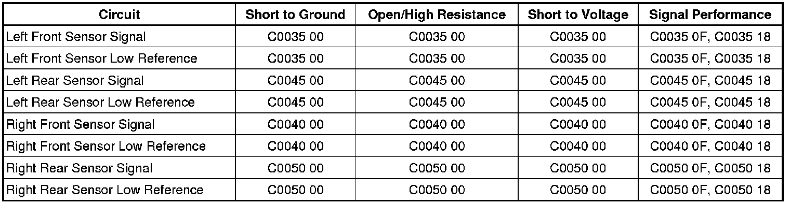

C0035
DTC C0035-C0050
Diagnostic Instructions
* Perform the Diagnostic System Check - Vehicle (Initial Inspection and Diagnostic Overview) prior to using this diagnostic procedure.
* Review Strategy Based Diagnosis (Initial Inspection and Diagnostic Overview) for an overview of the diagnostic approach.
* Diagnostic Procedure Instructions (Initial Inspection and Diagnostic Overview) provides an overview of each diagnostic category.
DTC Descriptors
DTC C0035 00
- Left Front Wheel Speed Sensor Circuit
DTC C0035 0F
- Left Front Wheel Speed Sensor Circuit Erratic Signal
DTC C0035 18
- Left Front Wheel Speed Sensor Circuit Signal Amplitude Less Than Minimum
DTC C0040 00
- Right Front Wheel Speed Sensor Circuit
DTC C0040 0F
- Right Front Wheel Speed Sensor Circuit Erratic Signal
DTC C0040 18
- Right Front Wheel Speed Sensor Circuit Signal Amplitude Less Than Minimum
DTC C0045 00
- Left Rear Wheel Speed Sensor Circuit
DTC C0045 0F
- Left Rear Wheel Speed Sensor Circuit Erratic Signal
DTC C0045 18
- Left Rear Wheel Speed Sensor Circuit Signal Amplitude Less Than Minimum
DTC C0050 00
- Right Rear Wheel Speed Sensor Circuit
DTC C0050 0F
- Right Rear Wheel Speed Sensor Circuit Erratic Signal
DTC C0050 18
- Right Rear Wheel Speed Sensor Circuit Signal Amplitude Less Than Minimum
Diagnostic Fault Information
Perform the prior to using this diagnostic procedure.

Circuit/System Description
As the wheel spins, the wheel speed sensor produces an alternating current (AC) signal. The electronic brake control module (EBCM) uses the frequency of the AC signal to calculate the wheel speed.
Conditions for Running the DTC
C0035-C0050 18
* The ignition is ON.
* Ignition voltage is greater than 8 volts.
* The brake pedal is not pressed.
* No other wheel speed circuit DTCs are set.
* Two or three other wheel speeds are not 0 km/h.
C0035-C0050 0F
* The ignition is ON.
* Ignition voltage is greater than 8 volts.
* The brake pedal is not pressed.
* A DTC is not set for the other wheel speed circuit on the same axle.
C0035-C0050 00
* The ignition is ON.
* Ignition voltage is greater than 8 volts.
Conditions for Setting the DTC
C0035-C0050 18
The code is set when the following conditions exist:
* One wheel speed is 0 km/h.
* The remaining wheel speeds are greater than 8 km/h (5 mph).
* The difference between the remaining wheel speeds is less than 11 km/h (7 mph) from each other.
C0035-C0050 0F
The code is set when both of the following conditions exist:
* The EBCM detects a change in wheel speed that exceeds 20 km/h (12 mph) between two 10 millisecond wheel speed samples.
* The condition occurs 3 times in 200 milliseconds.
C0035-C0050 00
The code is set when either of the following conditions exist:
* An open or a short to ground is detected on the wheel speed sensor signal circuit by the EBCM.
* A short to voltage is detected on the wheel speed sensor signal circuit by the EBCM.
Action Taken When the DTC Sets
If equipped, the following actions occur:
* The EBCM disables the antilock brake system (ABS) and the traction control system (TCS) for the duration of the ignition cycle.
* The ABS indicator turns ON.
* The vehicle dynamics caution (VDC) indicator turns ON.
* If the other wheel speed sensor on the same axle sets an additional DTC, the EBCM disables the dynamic rear proportioning (DRP) for the duration of the ignition cycle.
* When the EBCM disables DRP, the red brake warning indicator turns ON.
Diagnostic Aids
C0035- 0050 18
Under the following conditions, 2 wheel speed sensors input are 0 and DTCs are set:
* The 2 suspect wheel speeds equal zero for 6 seconds.
* The other wheel speeds are greater than 16 km/h (10 mph).
* The other wheel speeds are within 11 km/h (7 mph) of each other.
Diagnose each wheel speed sensor individually.
C0035-C0050 18, 0F, 00
If the customer comments that the ABS indicator is ON only during moist environmental conditions: rain, snow, vehicle wash, etc., inspect the wheel speed sensor wiring for signs of water intrusion. If the DTC is not current, clear all DTCs and simulate the effects of water intrusion by using the following procedure:
1. Spray the suspected area with a 5 percent saltwater solution. To create a 5 percent saltwater solution, add 10 g of salt to 200 ml of water (2 teaspoons of salt to 8 fl oz of water).
2. Test drive the vehicle over various road surfaces: bumps, turns, etc., above 40 km/h (25 mph) for greater than 30 seconds.
3. If the DTC returns, replace the suspected wheel speed sensor or repair the wheel speed sensor wiring.
4. Rinse the area thoroughly when completed.
Reference Information
Schematic Reference
Antilock Brake System Schematics ([1][2]Antilock Brakes / Traction Control Systems)
Connector End View Reference
Component Connector End Views (Connector Views)
Description and Operation
ABS Description and Operation (Description and Operation)
Electrical Information Reference
* Circuit Testing (Component Tests and General Diagnostics)
* Connector Repairs (Component Tests and General Diagnostics)
* Testing for Intermittent Conditions and Poor Connections (Component Tests and General Diagnostics)
* Wiring Repairs (Component Tests and General Diagnostics)
Scan Tool Reference
Control Module References (Programming and Relearning) for Scan Tool Information
Circuit/System Verification
Observe the scan tool Wheel Speed Sensor parameter. The reading should be the same speed on all sensors when driving in a straight line at a speed greater than 20 km/h (13 mph).
Circuit/System Testing
1. Ignition OFF, disconnect the harness connector at the appropriate wheel speed sensor.
2. Ignition ON, test for less than 1 volt between the signal circuit terminal A and ground.
• If not within the specified range, test the signal circuit for a short to voltage. If the circuit tests normal, replace the EBCM.
3. Test for less than 1 volt between the low reference circuit terminal B and the signal circuit terminal A.
• If not within the specified range, test the low reference circuit for a short to voltage. If the circuit tests normal, replace the EBCM.
4. Disconnect the harness connector at the EBCM.
5. Test for infinite resistance between the signal circuit terminal A and ground.
• If not the specified value, test the signal circuit for a short to ground.
6. Test for less than 1 ohm of resistance between the signal circuit terminal A at the wheel speed connector and the appropriate terminal A1, A3, A5, or A7 at the EBCM connector.
• If not within the specified range, test the signal circuit for an open or a high resistance.
7. Test for less than 1 ohm of resistance between the low reference circuit terminal B at the wheel speed sensor connector and the appropriate terminal A2, A4, A6, or A8 at the EBCM connector.
• If not within the specified range, test the low reference circuit for an open or a high resistance.
8. If all circuits test normal, replace the wheel speed sensor.
Component Testing
1. Ignition OFF, disconnect the harness connector at the suspect wheel speed sensor. .
2. Measure for 850-1350 ohms of resistance between terminal A and terminal B of the wheel speed sensor.
• If not within the specified range, replace the wheel speed sensor.
3. Test for greater than 100 mV AC voltage between terminal A and terminal B of the wheel speed sensor, when spinning the wheel.
• If not within the specified range, replace the wheel speed sensor.
Repair Instructions
Perform the Diagnostic Repair Verification (Verification Tests) after completing the diagnostic procedure.
* Front Wheel Bearing and Hub Replacement (Front Suspension)
* Rear Wheel Bearing and Hub Replacement (Rear Suspension)
* Control Module References (Programming and Relearning) for EBCM replacement, setup, and programming
Repair Verification
Diagnostic Repair Verification (Verification Tests)